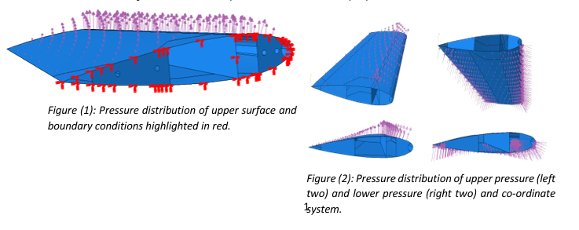
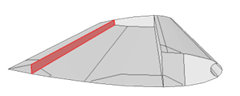
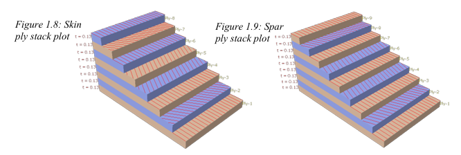
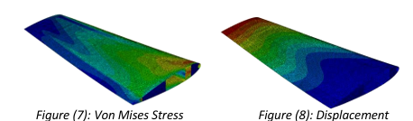
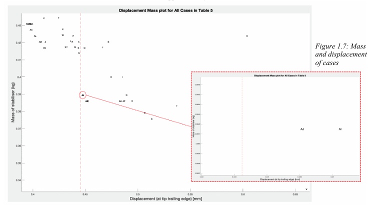
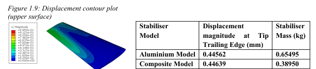

Project Overview
This was a two-part FEA team project (Coursework 1 and Coursework 2) modelling the horizontal stabiliser of a Robinson R22 helicopter in Abaqus. The stabiliser reduces flight disturbances to maintain dynamic stability, so its structural integrity directly affects flight safety.
CW1 built and verified a baseline aviation-aluminium shell model of the stabiliser, investigating how adding internal ribs and spars affected tip displacement and root stress.
CW2 took that verified aluminium baseline and asked a different question: could a carbon-epoxy composite layup replace the aluminium structure and meet the same displacement requirement at a significantly lower weight? The skin and spar stacking sequences (ply angles and ply count) were optimised to minimise mass.
Technical Approach
Both parts used Abaqus for the finite element analysis, with MATLAB used for polynomial curve fitting of the airfoil pressure distribution, mesh convergence residual-error calculations, and hand-calculation validation of composite lamina behaviour.

Key techniques
- Shell modelling of the stabiliser geometry, lofted between root (260 mm) and tip (155 mm) chords, with distributed airfoil pressure loading derived by fitting polynomial functions to coefficient-of-pressure data at a 10° angle of attack
- Mesh convergence and residual mesh error analysis to quantify model reliability, alongside sensitivity testing of rib/spar thickness and Young's modulus against manufacturing tolerances (CW1)
- Composite conventional shell lay-up modelling with orthotropic lamina properties, validated against MATLAB hand calculations, followed by iterative stacking-sequence optimisation of ply count and fibre orientation, applying symmetry and balanced-ply manufacturing constraints (CW2)
Process steps
- Built the baseline aluminium shell geometry from technical drawings and airfoil profile data, then derived and validated the distributed pressure loading with root encastre boundary conditions (CW1)
- Ran mesh convergence tests, identified a design change (adding a second spar near the trailing edge) to reduce tip displacement and root stress, and re-verified (CW1)
- Carried the verified aluminium baseline into CW2, swapped the material for carbon-epoxy, and independently tested spar ply count, spar fibre orientation, and skin fibre orientation against mass and tip displacement, narrowing to the lay-up that minimised mass while keeping displacement close to the aluminium baseline


Results & Analysis
The optimised carbon-epoxy stabiliser (spar lay-up [0,20,0,-20,0,-20,0,20,0], skin lay-up [0,30,0,-30,-30,0,30,0]) achieved a 40.5% mass reduction compared to the aluminium baseline, with only a 0.173% increase in tip displacement, a strong result for a weight-driven redesign.



However, the composite model's maximum von Mises strain at the skin exceeded the material's ultimate longitudinal and transverse tensile strains, meaning the simplified model as tested would fail. This was attributed to geometry simplifications (ribs, additional spars, and reinforcement plates were excluded from the model) and a simplified load representation on the upper surface, both of which would reduce real-world strain.
Challenges & solutions
The two main challenges were defining boundary conditions that accurately represented the aircraft connection without introducing unrealistic stress concentrations, and correctly implementing composite layup modelling: orthotropic lamina properties, ply orientation, and lay-up symmetry/balance constraints needed to avoid manufacturing defects like thermal warpage. The composite lamina implementation in Abaqus was independently checked against MATLAB hand calculations before being trusted for the full model. Separately, the CW1 aluminium model showed a stress concentration at the root that did not converge with mesh refinement; rather than force a result, this was reported as an unresolved limitation, with displacement (which did converge) used as the primary reliability metric instead.
Key learnings
This project reinforced how much FEA results depend on the assumptions behind them: mesh convergence, boundary condition choice, and load simplification all directly shape whether a result can be trusted. It also highlighted the real trade-offs in composite design: a lay-up that looks excellent on a mass/displacement basis can still fail on strain, which is why stacking-sequence optimisation has to be checked against material failure criteria, not just the primary performance target.
Team & my contribution
A team project with one other teammate. My contribution covered the Abaqus side from end to end: building the shell geometry, running the simulations, carrying out the mesh convergence studies, and compiling the results into Excel for analysis. My teammate built the pressure-distribution boundary condition in MATLAB, a function that varies the load across the full stabiliser span rather than applying a constant pressure, and independently validated the Abaqus results against hand calculations. We wrote the final report together.